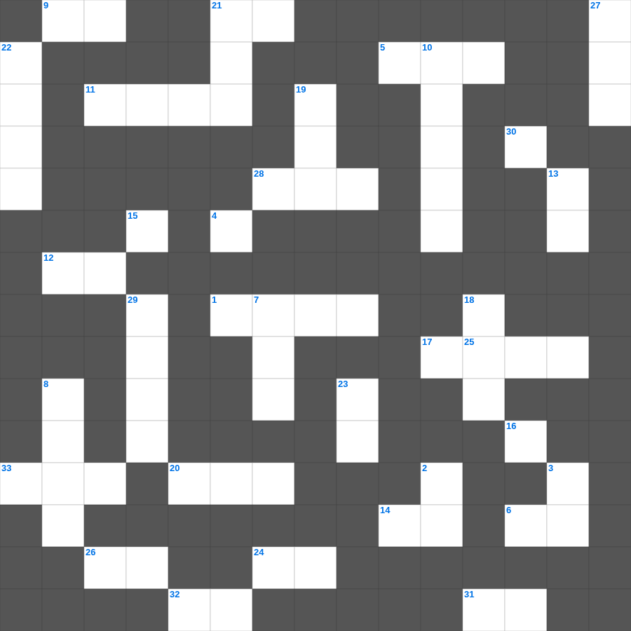

사무엘하 마스터 100
📌 서비스 정의
십자가로세로는 교회 주보와 주일학교에서 사용할 수 있는 성경 기반 가로세로 퍼즐 서비스입니다. 성경 인물, 사건, 핵심 구절을 바탕으로 제작되었습니다. 온라인 풀이 및 인쇄 기능을 제공합니다.
📖 사무엘하란?
사무엘하는 다윗이 이스라엘의 왕이 되어 나라를 통일하고 예루살렘을 수도로 삼는 과정과, 그의 범죄와 회복을 기록합니다.
📚 사무엘하의 주요 사건·주제
다윗이 왕으로 즉위 · 예루살렘 정복과 언약궤 이전 · 다윗의 언약(왕조 약속) · 다윗과 밧세바 사건 · 압살롬의 반역
사무엘하의 말씀을 퀴즈로 배우는 사무엘하 성경퀴즈입니다. 가로 힌트와 세로 힌트를 보고 35개의 단어를 맞춰보세요. 인쇄도 가능하고 정답 확인도 바로 되니 소그룹 모임이나 가정 예배 시간에도 활용하실 수 있습니다.

📝 가로 힌트
1. 바벨론에 포로로 잡혀갔다가 나중에 우대받은 유다 왕
5. 바사 왕 고레스 제삼년에 다니엘이 이것이라 이름한 벨드사살에게 한 일이 나타났으니
6. 물고기 뱃속에서 3일간 회개한 선지자
9. 반석에서 물이 나온 곳을 부른 이름 '시험하였음이라'
11. 모세가 늦어지자 백성들이 만든 우상
12. 그러므로 땅에 있는 지체를 죽이라 곧 음란과 부정과 사욕과 악한 정욕과 이것니
14. 전신갑주: 모든 것 위에 이것의 방패를 가지고 이로써 능히 악한 자의 모든 불화살을 소멸하고
15. 모압 여인, 시어머니 나오미를 섬긴 여인
16. 오히려 자기를 비워 이것의 형체를 가지사 사람들과 같이 되셨고
17. 내가 이제 너희를 위하여 받는 괴로움을 기뻐하고 그리스도의 이것을 그의 몸된 교회를 위하여 내 육체에 채우노라
20. 유다서의 저자 자신을 소개할 때 누구의 형제라고 했나
21. 하나님이 처음부터 너희를 택하사 성령의 이것하게 하심과 진리를 믿음으로 구원을 받게 하심이니
24. 너는 또 왼쪽으로 누워 이스라엘 족속의 죄악을 짊어지되 네가 눕는 이것 수대로 그 죄악을 담당할지니라
26. 거룩함에 흠이 없게 하시기를 원하노라... 우리가 주 예수 안에서 너희에게 구하고 이것하노니
28. 바울의 사정을 골로새 교인들에게 알리기 위해 보내진 사랑받는 형제
31. 그들이 바람을 심고 이것을 거둘 것이라
32. 유다서 1장 21절: 하나님의 이것 안에서 자신을 지키며
33. 내가 그를 찾아도 못 만났고 이것도 응답이 없었노라
📝 세로 힌트
2. 성령의 새롭게 하심을 무엇이라고 표현했나: 중생의 이것
3. 그 막대기들을 서로 합하여 하나가 되게 하라 네 손에서 이것이 되리라
4. 지혜로운 여인은 자기 집을 세우되 미련한 여인은 자기 이것으로 그것을 허느니라
7. 믿음과 사랑의 이것을 붙이고 구원의 투구를 쓰자
8. 살처럼 이것한 마음을 주어 내 율례를 따르며 내 규례를 지켜 행하게 하리니
10. 요한삼서 1장 12절: 진리에게서 증거를 받은 신실한 사람
11. 지혜를 얻는 것이 이것을 얻는 것보다 얼마나 나은고
13. 어리석은 자가 되지 말고 오직 주의 뜻이 무엇인가 이것하라
18. 맹인에게 실로암 못에 가서 씻으라 하셨을 때 그는 눈을 뜨고 어떤 상태로 돌아왔나
19. 내가 사망의 음침한 이것을 다닐지라도 해를 두려워하지 않을 것
21. 유다서 1장 24절: 능히 너희를 보호하사 이것지 않게 하시고
22. 겉치레로 하나 참으로 하나 무슨 방도로 하든 전파되는 것은 이것니 이로써 나는 기뻐하고 또한 기뻐하리라
23. 네가 악인을 깨우치되 그가 그의 악한 마음과 악한 행위에서 돌이키지 아니하면... 너는 네 이것을 보존하리라
25. 의인이 나를 칠지라도 이것으로 여기며 책망할지라도 머리의 기름으로 여겨서
27. 빛의 열매는 모든 착함과 의로움과 이것에 있느니라
29. 욥기를 통해 알 수 있는 고난의 유익 '하나님을 이것함'
30. 복 있는 사람은 악인들의 무엇을 따르지 아니하나
🧩 이 퍼즐에서 배우는 내용
이 퍼즐은 사무엘하 마스터 100의 핵심 단어와 개념을 자연스럽게 복습할 수 있도록 구성되었습니다. 주일학교 수업이나 개인 성경공부에서 학습 내용을 점검하는 용도로 바로 활용할 수 있습니다.
🧑🏫 교회 교육 자료 활용
이 퍼즐은 주일학교 교재 추천 자료로 활용할 수 있고, 주일학교 주보에 넣기 좋은 분량으로 구성되어 있습니다. 수업용 주일학교 교안에 활동지로 붙이거나, 예배 후 복습용 주일학교 공과교재로 바로 사용할 수 있습니다.
🏷️ 키워드
사무엘하 성경퀴즈, 사무엘하, 십자가로세로, 성경퀴즈, 말씀퀴즈, 가로세로퍼즐, 주일학교 교재 추천, 주일학교 주보, 주일학교 교안, 주일학교 공과교재